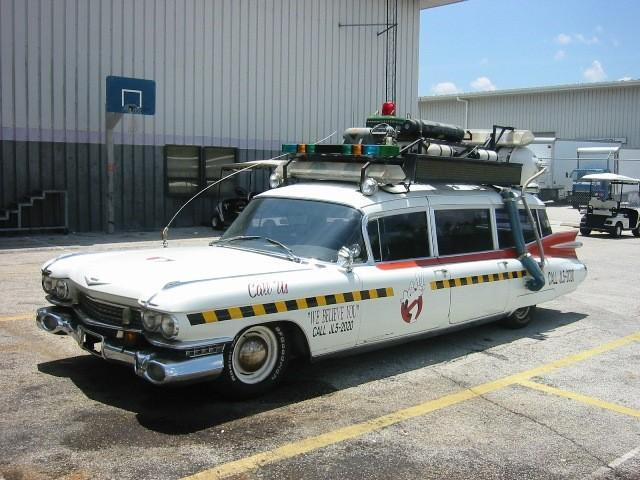
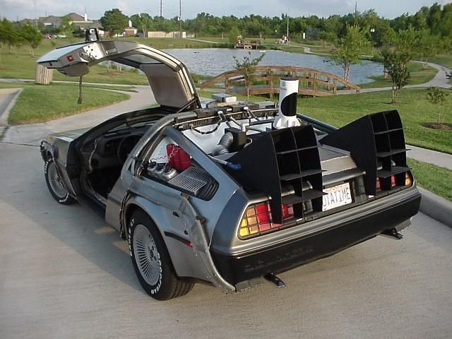
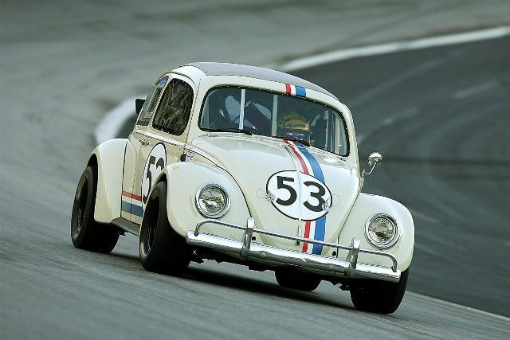
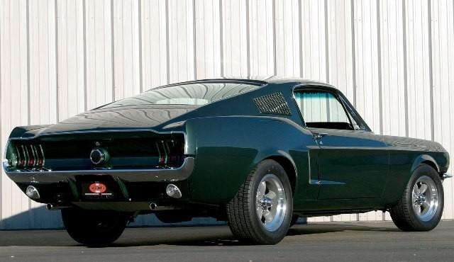
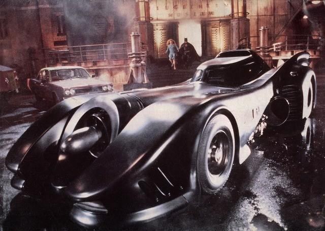
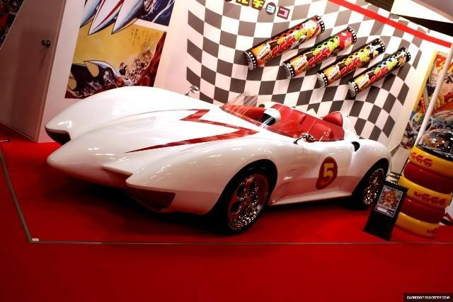

Conoce los autos iconicos de las peliculas

Cadillac Miller Meteor 1959
Apariciones: Ghostbusters (1984), Ghostbusters II (1989).
Datos extra: El Ectomobile o Ecto 1 es un Cadillac Miller “Lymo Style, Ambulance Conversión”. El diseño original del vehículo fue de Steven Dane; la conversión del vehículo tuvo un costo de $4,800 dólares.

DeLorean DMC12 1981
Apariciones: Volver al Futuro (1985), Volver al Futuro II (1989) y Volver al Futuro III (1990).
Datos extra: El DeLorean original es un modelo creado por el constructor John DeLorean, con carrocería de acero inoxidable, el primer prototipo del auto se presentó en octubre de 1976. Para la producción original se modificaron 6 DeLorean, de los cuales sólo sobreviven tres.

VW Deluxe 1963
Apariciones: The Love Bug (1968), Herbie Rides Again (1974), Herbie Goes to MonteCarlo (1977), Herbie Goes Bananas (1980), The Love Bug (1997) y Herbie: Fully Loaded (2005).
Datos extra: Dentro de la historia, Herbie es un vochito de carreras con mente propia, cuenta con el número 53 y tiene placas vintage de California con las letras y dígitos: QFP 857. Para la primera película (The Love Bug) uno de los vehículos utilizados por la producción estaba equipado con el motor de un Porsche 356.

Ford Mustang GT 1968
Apariciones: Bullitt (1968)
Datos extra: Filme protagonizado por el legendario Steve Mc Queen, quien encarnó al policía Frank Bullitt. El filme fue estrenado el 17 de octubre de 1968. En el 2008 Ford Motor Company produjo un nuevo modelo para celebrar el 40 aniversario de la película. El Mustang Bullit estelarizó la que para muchos ha sido la mejor secuela de persecución automotriz de todos los tiempos.

Custom 1989
Apariciones: Batman (1989)
Datos extra: El vehículo de la película estrenada el 23 de Junio de 1989, dirigida por Tim Burton y protagonizada por Michael Keaton, reflejó el estilo Art Decó de los años cuarentas de Ciudad Gótica, fue diseñado por Anton Furst y construido sobre el chasis de un Chevy Impala.

Custom
Apariciones: Speed Racer (Meteoro) (2008)
Datos extra: El Mach 5 apareció en la película Speed Racer, sin embargo el vehículo se conoce desde 1967, cuando aparecía en la serie animada del mismo nombre. El diseño original del bólido corrió a cargo de Daisuke Mifune. Cuenta una leyenda urbana que la M que porta sobre el cofre hace referencia al apellido de su creador.